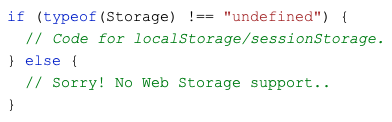
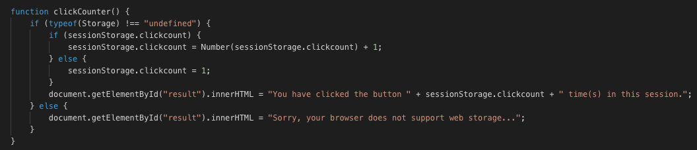

Web and local storage have come a long way. There are two types of storage for storing data.
local storage and session storage.
window.localStorage - stores data with no expiration date which means that it can store it forever
window.sessionStorage - stores data for one session (data is lost when the browser tab is closed)
As a good practice, one should check the browser support for localStorage and sessionStorage before trying to store a lot of data.
Again, the sessionStorage object is equal to the localStorage object, except that it stores the data for only one session. The data is deleted when the user closes the specific browser tab.
Click the button to see the counter increase.
Close the browser tab (or window), and try again, and the counter is reset.
